¿Qué es el Walk-In?¶
El término Walk-In en la industria hotelera y en sistemas de gestión como Erbon PMS se refiere a una reserva realizada en el momento en que el huésped llega al hotel, sin una reserva previa.
Ejemplo de Walk-In¶
Un huésped llega al hotel sin haber reservado previamente y solicita una habitación disponible. El recepcionista verifica la disponibilidad y procede a registrar la reserva en el sistema desde el menú Recepción ➡ Inlcuir Walk-In.
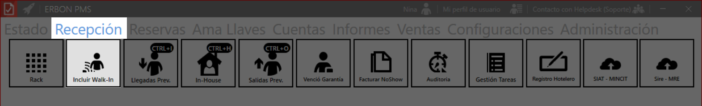
Diferencias entre walk-in y reserva anticipada¶
| Característica | Walk-In | Reserva anticipada |
|---|---|---|
| Cuándo se realiza | En el momento de llegada | Días, semanas o meses antes |
| Disponibilidad | Sujeta a disponibilidad inmediata | Habitaciones aseguradas |
| Tarifas | Puede tener un precio estándar o más alto | Puede incluir descuentos por reserva anticipada |
| Garantía de habitación | No está garantizada | Sí, si está confirmada previamente |
¿Cómo realizar una reserva Walk-In en Erbon PMS?¶
Realizar una reserva en Erbon PMS es un proceso simple y organizado. A continuación, te guiamos paso a paso sobre cómo hacerlo correctamente.
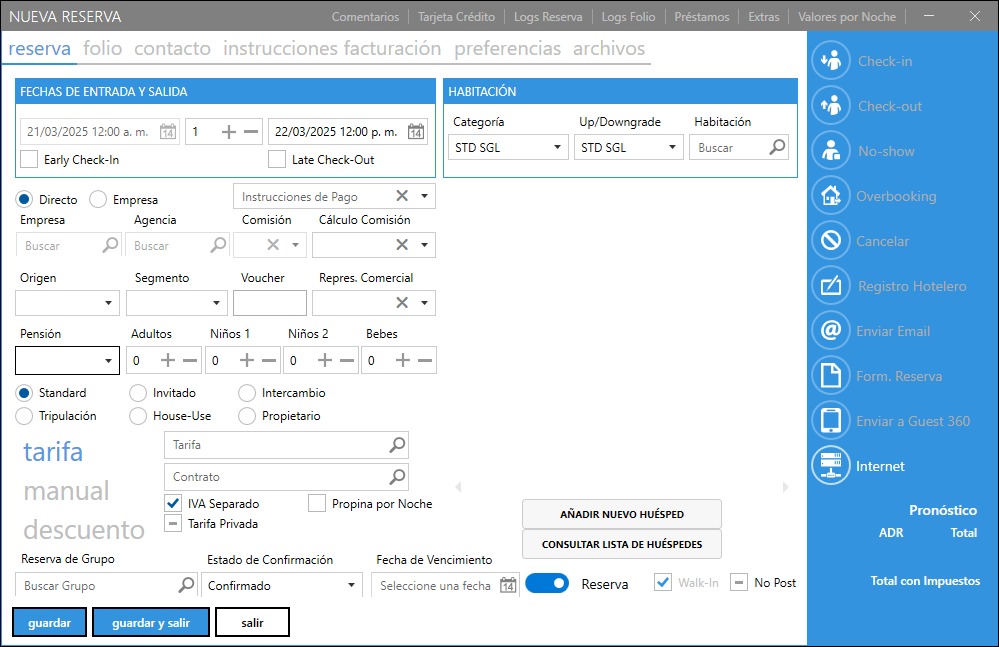
1. Datos principales de la reserva¶
Antes de registrar una reserva, es importante ingresar la información básica:
Fecha de Check-in: Día en que el huésped llegará al hotel.
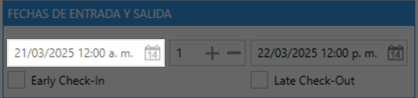
Número de noches: Cantidad de noches que permanecerá hospedado.
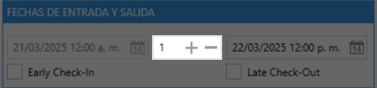
Fecha de Check-out: Día en que el huésped se irá.
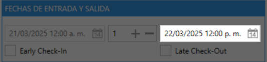
Cómo marcar Early Check-In o Late Check-Out en Erbon PMS
Si un huésped necesita ingresar antes del horario habitual de check-in o salir después del check-out estándar, es importante indicarlo en la reserva para evitar conflictos operativos y aplicar los cargos correspondientes si es necesario.
1. Activar ✅ Early Check-In (Ingreso anticipado)
Si el huésped llega antes del horario estándar de check-in, marca la casilla "Early Check-In" en la sección "Fechas de Entrada y Salida".
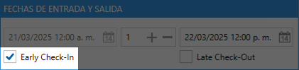
2. Activar ✅ Late Check-Out (Salida tardía)
Si el huésped necesita salir después del horario estándar de check-out, marca la casilla "Late Check-Out" en la misma sección.
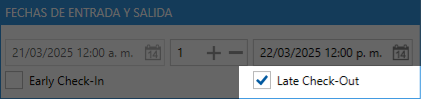
Resumen del proceso:
1️⃣ Early Check-In: Se marca si el huésped ingresa antes de la hora estándar.
2️⃣ Late Check-Out: Se marca si el huésped saldrá más tarde de lo habitual.
3️⃣ Verifica si se aplican cargos adicionales.
4️⃣ Confirma la disponibilidad antes de aceptar la solicitud.
2. Origen de la reserva¶
Indica cómo fue realizada la reserva:
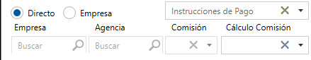
- Directo: Si el huésped hizo la reserva personalmente.
-
Empresa: Si la reserva fue gestionada por una empresa. Haz clic en la lupa 🔍 y busca la empresa registrada en el sistema. Luego, selecciona la opción correcta haciendo doble clic.
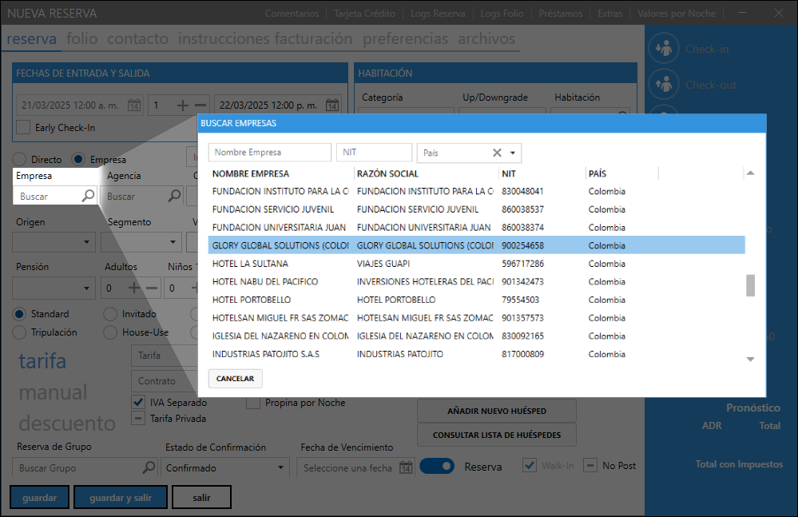 ✅ Se usa cuando el huésped es un empleado de una empresa que tiene convenio con el hotel.
✅ Puede incluir tarifas corporativas o beneficios especiales.Ejemplo:
Un trabajador de "Empresa X" llega al hotel. Como la empresa tiene un acuerdo con el hotel, el empleado paga una tarifa especial o la empresa paga directamente. -
Agencia: Si la reserva proviene de una agencia de viajes. Haz clic en la lupa 🔍 y busca la agencia registrada en el sistema. Luego, selecciona la opción correcta haciendo doble clic.
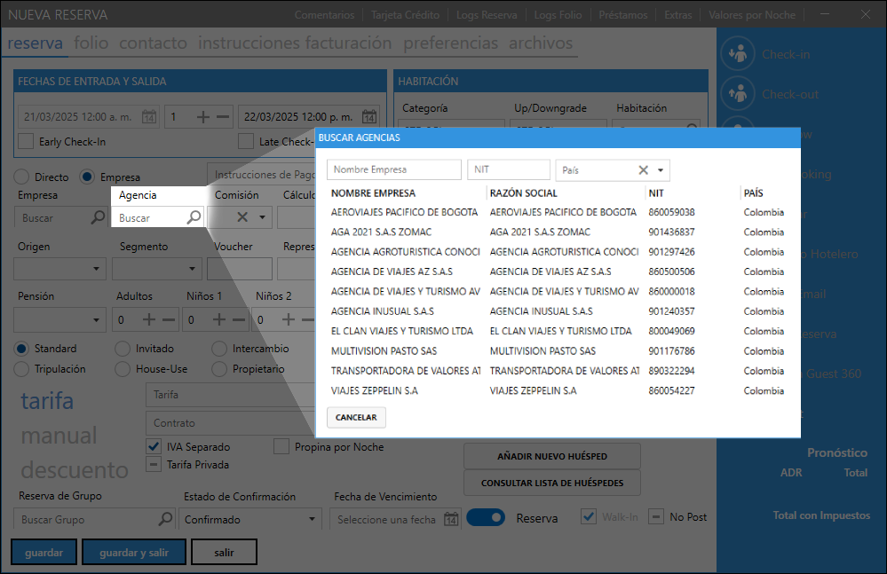 ✅ Se usa cuando la reserva fue hecha por una agencia de viajes.
✅ Puede implicar comisiones o tarifas especiales.Ejemplo:
Una persona reservó a través de "Agencia Y". El hotel debe registrar la agencia para calcular posibles comisiones o acuerdos.
- Origen: Especifica de dónde proviene la reserva (ej. web, teléfono, presencial).
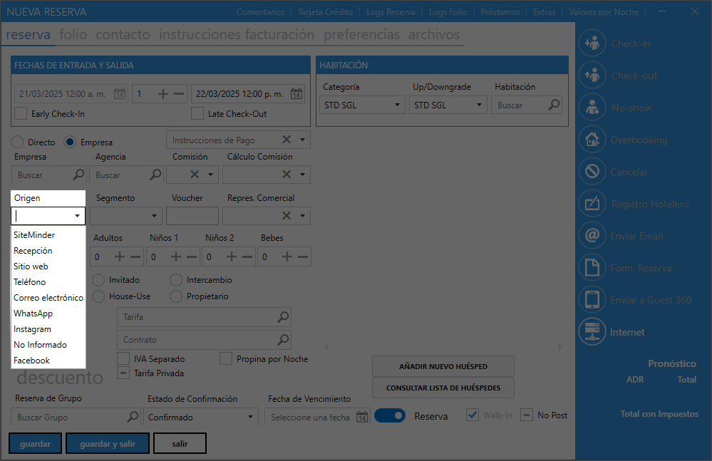 - Segmento: Indica el tipo de cliente (corporativo, turístico, etc.).
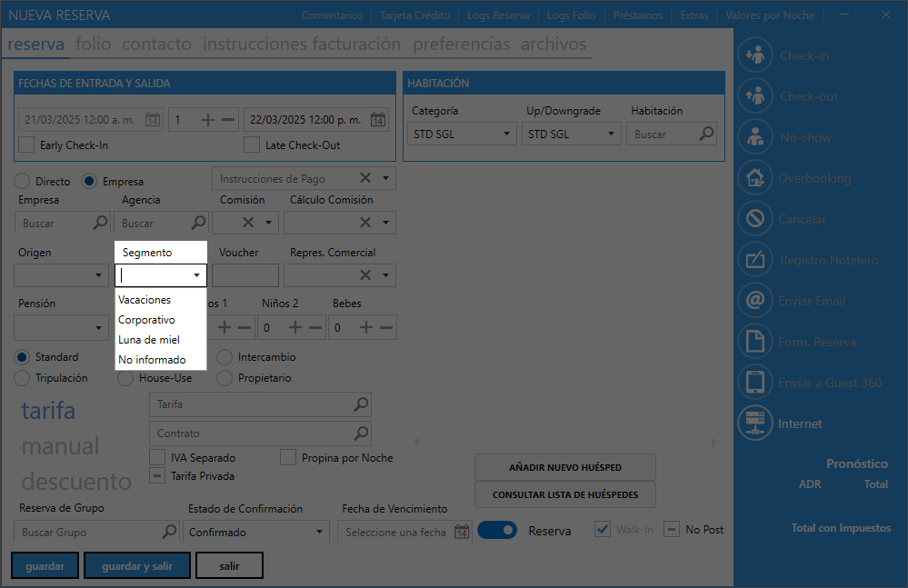 - Voucher: Si la reserva tiene un número de voucher, introdúcelo aquí.
- Representante Comercial: Nombre del agente comercial responsable de la reserva.
3. Datos de los huéspedes¶
Indica la cantidad de personas que se hospedarán:
- Adultos: Número de adultos en la habitación.
- Niños: Cantidad de niños en la reserva.
- Bebés: Si hay bebés en la reserva.
4. Tipo de reserva¶
Selecciona el tipo de reserva según el caso:
- Padrón: Genera cobro automático.
- Uso de la Casa: No genera cobro (uso interno del hotel).
- Permuta: No genera cobro (intercambio de servicios).
- Cortesía: No genera cobro (estadía gratuita).
- Propietario: Si es el dueño del hotel quien se hospeda.
- Tripulante: Si es un miembro de la tripulación de un aeropuerto (genera cobro).
5. Tarifas y descuentos¶
- Tarifa: Haz clic en la lupa 🔍 para seleccionar la tarifa correspondiente al período de la reserva.
- Manual: Ingresa el precio de la tarifa manualmente (opcional).
- Descuento: Especifica si hay algún descuento en la reserva.
6. Grupo de reserva¶
Si la reserva pertenece a un grupo, haz clic en la lupa 🔍 para seleccionar el grupo al que pertenece.
7. Confirmación de la reserva¶
- Estado: Indica si la reserva está confirmada o en espera de confirmación.
- Vencimiento: Fecha límite para confirmar la reserva.
- Reserva o Pre-reserva: Especifica si la reserva es definitiva o solo una pre-reserva.
- Walk-in: Selecciona esta opción si la reserva se hizo en la recepción sin previo aviso.
8. Selección de habitación (UH - Unidad Habitacional)¶
- Tipo de UH Reservada: Selecciona el tipo de habitación reservada.
- Tipo de UH Ocupada: Selecciona el tipo de habitación ocupada.
- UH: Haz clic en la lupa 🔍 para ver las habitaciones disponibles y selecciona la que prefieras.
9. Registro del huésped¶
- Incluir nuevo huésped: Permite registrar un nuevo cliente en el sistema.
- Consultar lista de huéspedes: Busca clientes ya registrados para seleccionarlos en la reserva.